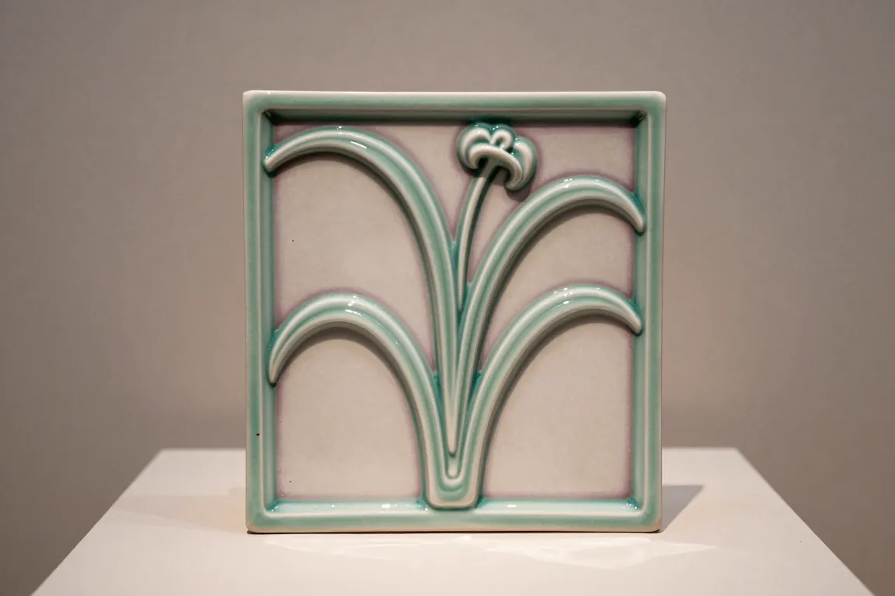

ceramics · 1895–1915 · also: Jugendstil tiles, Secessionist tiles, Barbotine tiles, Moulded Art Nouveau tiles
Moulded earthenware tiles with a plant line in low relief and a deep, soft glaze. The tile joins a flowing stem, a lily or a woman's hair to a sea-green or plum ground. Factories made them for shop fronts, stairs, hearths and tube stations.

Core thesis
A factory tile can carry the line of a plant, if the mould and the glaze do the drawing.
Design principles
Draw the design as one curved line, thicker at the base and thin at the tip, that flows across 2 to 4 tiles.
Press the line in low relief of 1 to 3 mm, so that the glaze pools in the hollows.
Use a matt or satin glaze with a soft break in colour at each edge of the relief.
Choose muted colours: sea green, plum, ochre, grey blue and cream, with 2 or 3 in one panel.
Make the tile 6 inches square or a tall panel, and plan a border and a frieze for the same line.
Use a motif from nature: lily, iris, poppy, peacock feather, or a woman with long hair.
Apply the colour in thick pools, or draw each line with a trail of slip, so that each colour keeps to its field.
Set the tiles in hearths, porches, stair risers and shop fronts, where the line leads the eye.